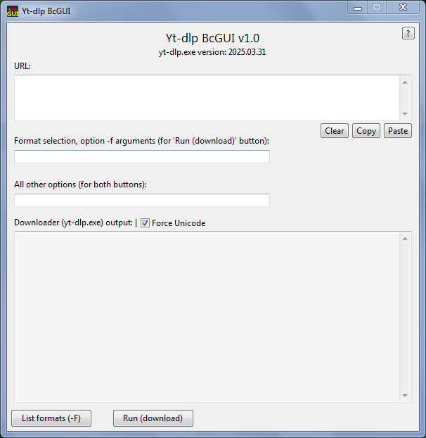
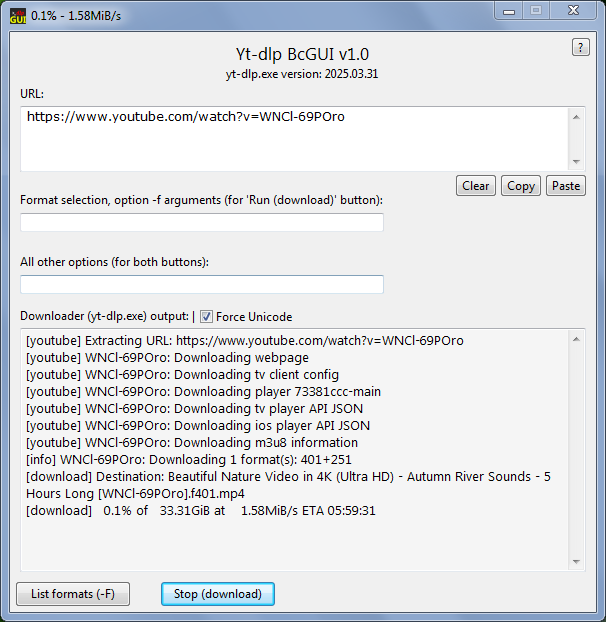
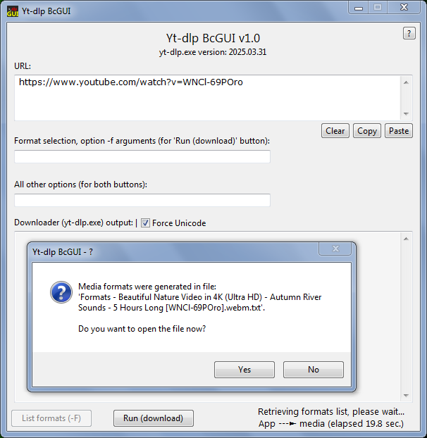

-
Yt-dlp
BcGUI
-
Description:
-
Yt-dlp BcGUI is a graphical user interface for the command line tool
yt-dlp.
-
The Bc
part in the name comes from the word basic,
so it is not a fancy GUI, instead it was designed to run fast
(written in pure C language) with a simple interface. With this
application you can do things like: download media (obviously), get
a formatted list (generated in a .txt file) of the available media
formats, update the yt-dlp downloader etc.
-
The application is written in C, it is small (only 124 KiB!) and
does not depends on any other software framework (like .NET).
-
It is released as a single 64-bit Windows executable file, so it
will run only on 64-bit operating systems.
-
Because 32-bit PCs are quite rare nowaday, there is no 32-bit
variant available. Though if there will be need for such a variant,
a recompile for 32-bit is conceivable.
-
-
Screenshots:
-



-
-
Download:
-
You can always download the latest version from here,
or go to the development
page.
-
-
Copyright
© 2025 Zsolt Kántor. All Rights Reserved.